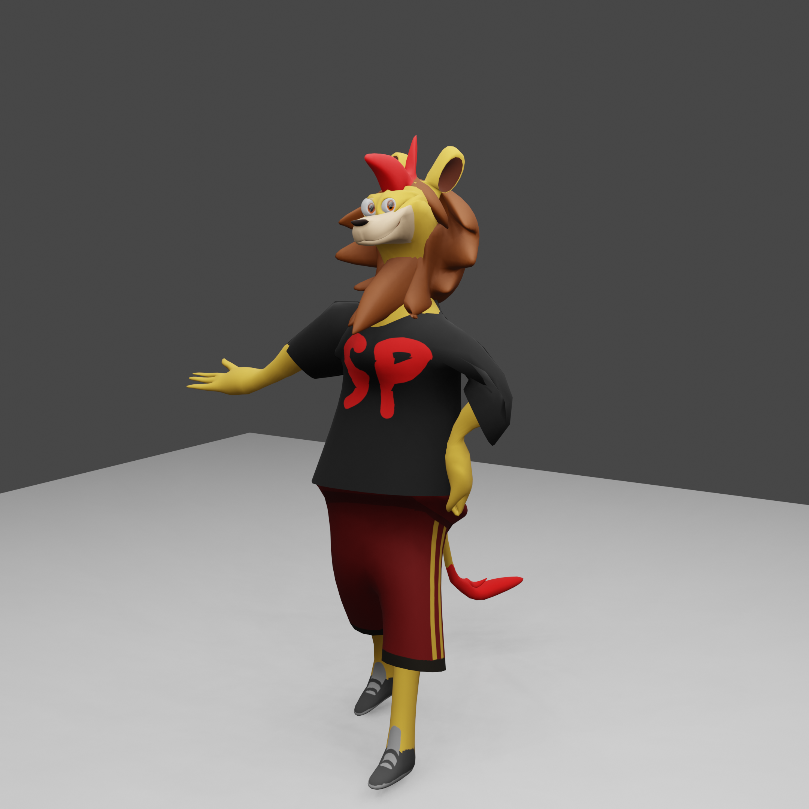
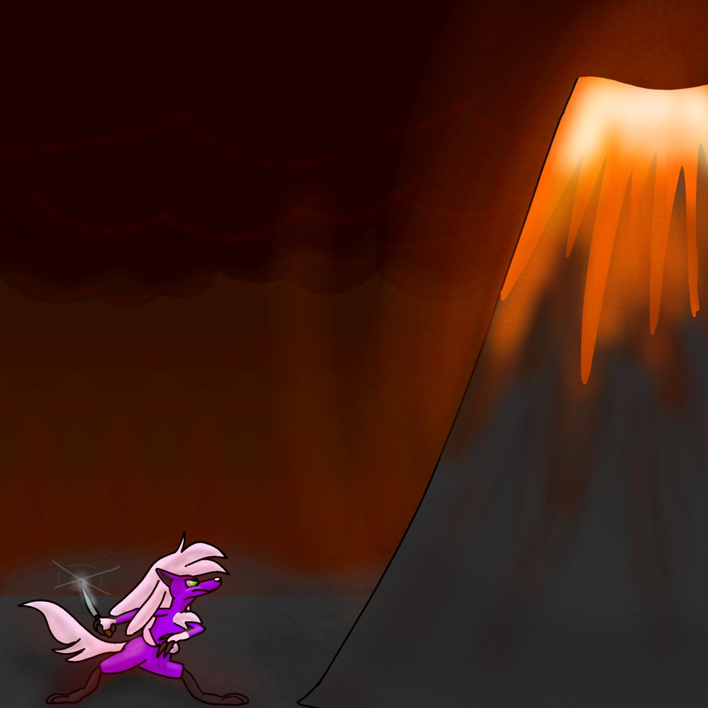
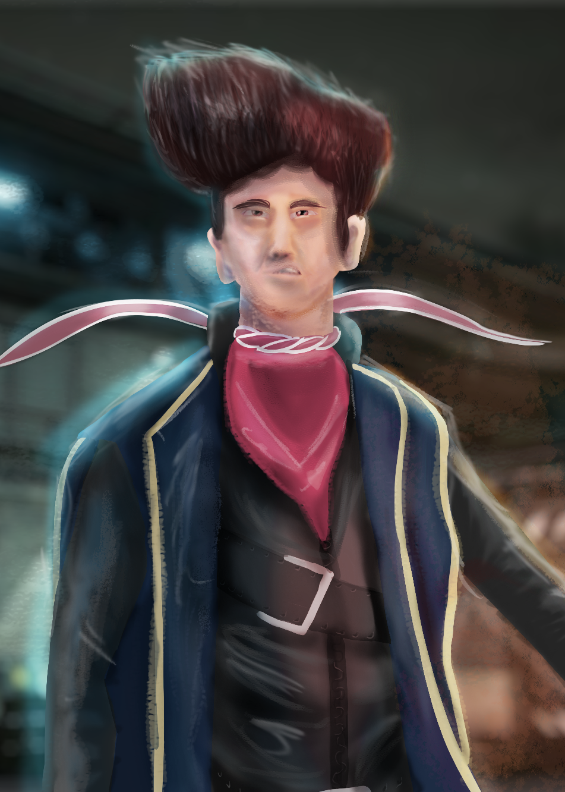

☰
Miscellaneous Drawings and Animations
Art I've made that isn't related to stories or games I created.

- A music video for my song Air-Conditioned

- A music video for my song Please Stand By
- Announcing my installation of Blender

- Fanart of Singapore Polytechnic's Jumba
- 
- A 3D model of Jumba, the first character I've modelled in Blender
- Art for a drawing game, the prompt was "Kermit saying Welcome"
- 
- Art for a drawing game, the prompt was "purple wolflike animal (pokemon?)w knife in front of volcano"

- One of my profile pictures
- A 3D animation of Jumba, my second 3D character animation and my third animation in Blender overall
- 
- A render for a course about Digital Painting (the character has not been fleshed out, all of you are free to adapt him for any of your own works)

- My contribution to 2024's NDP, group photo of the many, many lions of our country

- The folder icon for Intro to Music Production (I am ecstatic!!!)

- A new character I made: Joules Chizwick. Literature student charged with enthusiasm